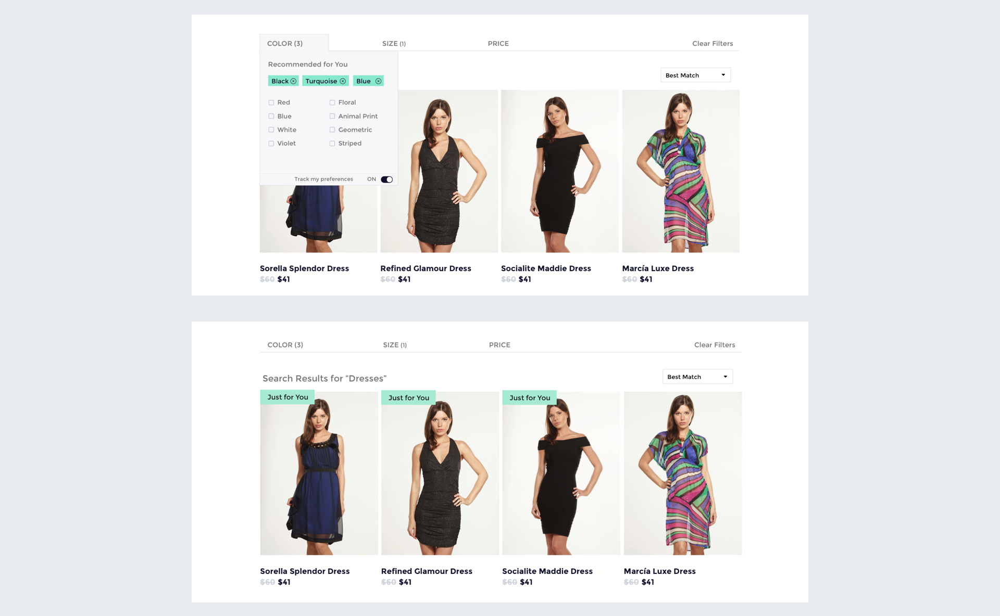

Ecommerce Personalization
What the project is.
My team at SearchSpring wanted to provide ecommerce sites with the ability to personalize their shoppers experience on their site. Ecommerce retailers wanted to provide their shoppers with search results tailored to the individual shopper’s tastes and preferences. Our objective was to devise a method to discover shopper product preferences and provide an interface that informs end users that what preferences are being applied to search results. I had to iterate quickly and get concepts in front of users to test their validation. This experience helped me learn new design methodologies which refined my overall comprehension of experience design.
Role:
Product Designer

A screen from one of the high fidelity prototypes made for this project
Challenges we solved for
Without historical data, how can we know what kinds of products a shopper has an affinity toward?
How can we provide end users with transparency and control of their data?
Where I Contributed
Creating wireframes based on concepts discussed with stakeholders and end users, creating Invision protypes to test with users, Drafting interview scripts, collecting and synthesizing qualitative data, refining designs based on feedback and data.
Research and Ideation
Taking out the guesswork: Implicit vs Explicit shopper preferences
The problem we faced was how to gather the data to deliver personalized results. One approach is to track shopper behavior to reveal patterns that could be used to present more relevant products to the shopper.
Engagement would measured by observing click activity and filters used on products. Common attributes between the clicked products and filters would determine the shoppers preferences. For example, if a shopper is looking at running shoes and consistently clicks on "Nike" and shoes that are black, we can conclude they have an affinity for shoes that are Nike or are black.
This was ok in theory but in early internal testing we found that there were some snags with this solution. It takes time to generate enough behavioral data to confidently surface preferred products. Any data gathered would be noisy and we’d most likely require multiple shopping sessions to determine the true shoppers preferences.
We then had the idea to supplement the implicitly gathered data by having the customer explicitly tell us what they like. I brainstormed multiple approaches for this idea. One approach was to give visibility into the already gathered implicit preferences and allow the user to edit them in a widget type interface.
Gathering explicit preferences in the search result page
Transparency and control
Something that was clear from early concept testing was that transparency into the personalization preferences was highly desirable. Letting end users know that their shopping habits were being used to enhance their shopping experience was added to alleviate concerns about privacy and control over their data.

Example wireframes of the preferences editor for shoppers
Testing
We made mockups of potential solutions and showed them to our customers. We conducted unmoderated user testing to validate the needs for some of the proposed features. I created click-through prototypes of what a typical shopper experience could look like. Some questions that we answered through our testing:
- How do end users feel about shopping preferences being tracked and exposed?
- Would modifying search results ease friction in online shopping and offer a better shopping experience?
- How does exposing the users shopping preferences fit into established patterns of online shopping?
Screens from the Invision prototype
What we learned from testing
- The preferences editor looks like facets and its use is confusing
- Mixed feedback that the in-line questionnaire is intrusive or distracting from the products - others say it would get lost or unnoticed
- Better product product recommendations would greatly complement (or even meet the needs) of personalization
- Nearly everyone expressed that detailed preferences editing could exist on separate page, in the account page, or dedicated modal.

What is the difference between a preference and filter? Our testers couldn't tell and we had a hard time explaining :\
Refinements based on Testing
The glaring problem with our prototype was that the preferences editor looked like a duplication of the filter options and was confusing for our testing participants. To remedy this, our next iteration did away with the preferences editor and combined it with the current filters. Instead of outlining what preferences were surfaced we merely suggested filter options based on the shoppers' habits. Similarly instead of rearranging the whole page of search results, only the top three slots were allotted for personalized results. We found that this latest approach kept the shopper immersed in the shopping experience as opposed to the preference editor which demanded too much attention as users were constantly scrolling back to the top of the page and making adjustments.
Recommended facet options and products based on product affinity
In Retro
We took a long time with this project and worked with a lot of assumptions that were never fully validated. In the future, we could get these ideas in front of customers and stakeholders a lot sooner instead of barking up the wrong tree for so long. We ultimately decided that the use of a front facing explicit preference gathering was not useful to small or specialized retailers who did not have regular shoppers. Ecommerce giants like Amazon, ebay etc. would be better suited for this kind of endeavor because they have regular shoppers visiting their site. A small number of our sites could leverage the product on their account page, but it was not enough to sustain the project from a business standpoint.
Next Project

SearchSpring Redesign
Designing for better usability & consistency
UI design, User testing, Design Systems, Visual design, Wireframing, Prototyping
View More